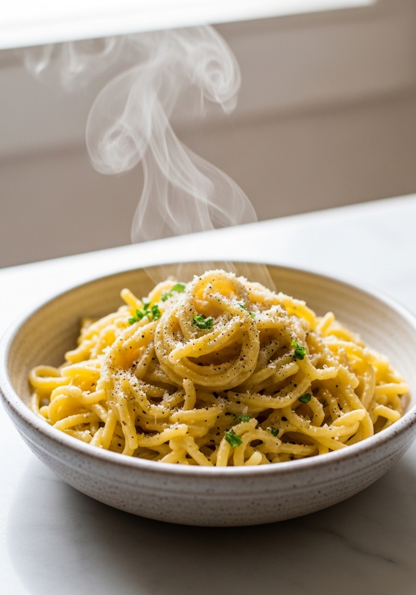
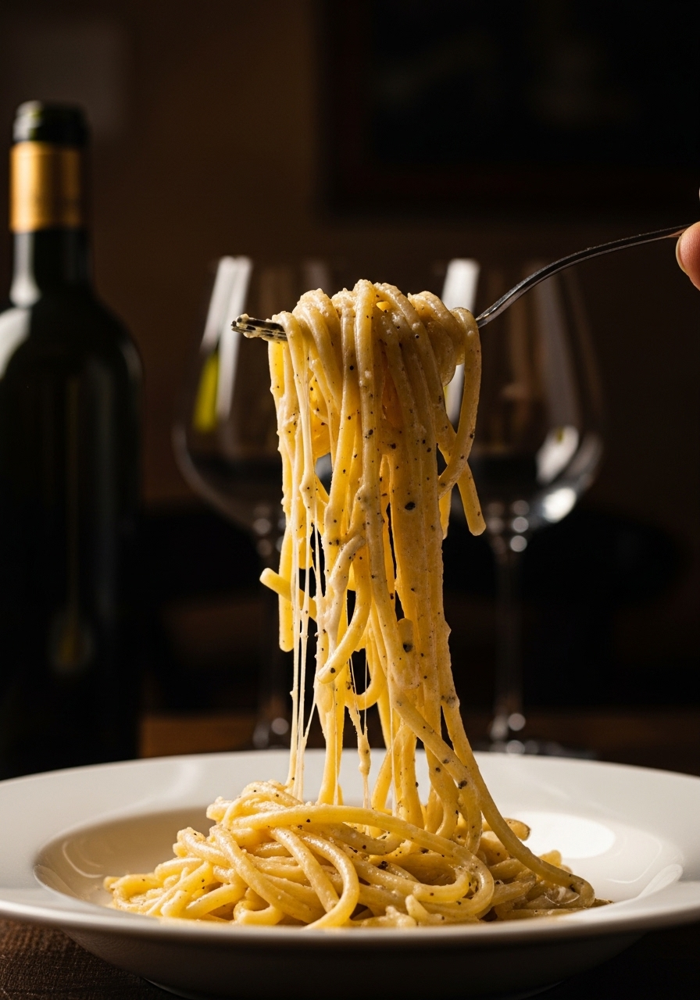

Tre ingredienti. Niente panna, niente burro (quasi). Niente scorciatoie. Il cacio e pepe è la più tecnicamente impegnativa delle quattro paste romane classiche — e la più gratificante quando riesce. Questa guida spiega esattamente perché va storto e come renderlo perfetto ogni singola volta.

3 IngredientiIl problema è fisico. Il Pecorino Romano ha un alto contenuto di grassi e sale che lo fa raggrumare e indurire quando esposto al calore elevato o all'umidità eccessiva. La differenza tra un cacio e pepe setoso da ristorante e un pasticcio grumoso è solitamente il controllo della temperatura e la tecnica. L'acqua di cottura non è solo un ingrediente — è l'emulsionante che tiene insieme tutto il piatto. Il suo contenuto di amido, la temperatura e il rapporto in cui viene aggiunta sono le variabili che separano il successo dal fallimento.
Il cacio e pepe tradizionale usa 100% Pecorino Romano — un formaggio di pecora pungente, salato e saporito. Alcune ricette moderne mescolano 70% Pecorino con 30% Parmigiano Reggiano per un sapore più delicato. Entrambe le versioni sono valide, ma quella romana purista è tutto Pecorino. Se hai mangiato cacio e pepe fatto solo con Parmigiano, hai assaggiato una versione più morbida e meno pungente. Usa il miglior Pecorino Romano DOP che riesci a trovare.
Ingredienti
Procedimento

Il cacio e pepe va mangiato immediatamente — come tutti i piatti di pasta romani, non aspetta e non si riscalda bene. La salsa si indurisce e si raggruppa quando si raffredda. Se devi riscaldarla, fallo delicatamente in padella con un goccio d'acqua a fuoco bassissimo, mescolando continuamente.
Il formaggio si è raggrumato perché la padella era troppo calda quando lo hai aggiunto, o l'hai aggiunto direttamente alla pasta senza fare prima una pasta di formaggio. Prepara sempre la pasta di Pecorino con acqua di cottura tiepida (non calda) prima, poi aggiungila fuori dal fuoco.
Puoi, ma non è tradizionale. Il Parmigiano Reggiano si scioglie più facilmente ma ha un sapore più delicato. Se sei nuovo al cacio e pepe, un mix 50/50 è più indulgente mentre impari la tecnica.
Il tonnarello è tradizionale — uno spaghetto spesso e quadrato tipico di Roma. Gli spaghetti normali o i rigatoni funzionano anche. La pasta deve essere amidacea — cuocila in meno acqua del normale per ottenere un'acqua di cottura più concentrata.
La ricetta romana originale usa solo pasta, Pecorino e pepe — niente burro. Alcune versioni moderne aggiungono un cucchiaio di burro per ricchezza, ma i puristi lo evitano. Prova prima senza.
Cacio e pepe significa letteralmente 'formaggio e pepe' — il pepe non è una guarnizione, è un ingrediente principale. Dovresti usarne più di quanto sembri comodo. 2 cucchiaini di pepe macinato grossolanamente per 2 porzioni è un buon punto di partenza.